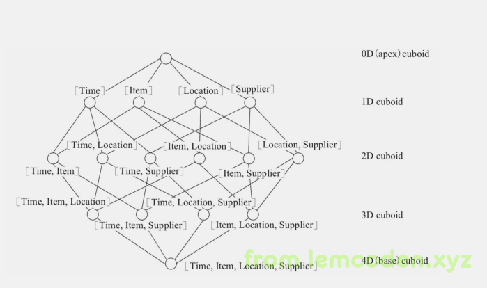
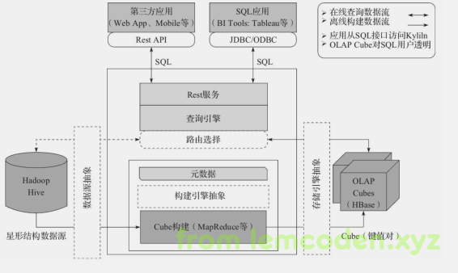

使用kylin前，你需要知道？
为什么要使用Kylin
在使用一个框架之前我们都要问问自己为什么要使用这个框架，他要解决什么问题，这个框架在解决这方面问题有什么样的优势，Kylin也如此。
那么他是解决什么问题的呢？他是解决数据仓库工程的最后阶段，OLAP（联机分析处理）的查询慢的问题。
在实际的数据仓库项目中，我们需要在几亿甚至上百亿条的数据当中聚合查询我们所需要的信息，但是这对于批处理来说是非常缓慢的查询过程。但是kylin不同，它通过自己所独有的预计算功能，将原来查询所需的几个小时缩短为秒内返回。
使用kylin前的几个概念
维度：看待事物的角度，比如时间，地点，销售量，销售物品类别
度量：被聚合的统计值，也就是聚合运算的结果，它一般事连续的值。
Cube：数据魔方，我们传统的数据库的表字段在数据仓库的分析前，会先把字段转化为相应的维度和度量，维度和度量组成了整体的Cube
Cubeboid：我们通过维度和度量预先计算出所有查询的可能结果，每种可能结果的实体我们称之为Cuboid
星型模型：星型模型，雪花模型，事实星座模型主要是数据建模相关工作需要深度了解的知识，这里我简单举个例子，有兴趣的小伙伴可以自行查询。
kylin的工作过程
1.指定数据模型，定义维度和度量。（这个需要开发人员根据需求自己设置，博主会在后续的博客中说明）
2.预计算Cube，计算所有Cuboid并保存为物化视图。
这个我们举个例子，比如我们有一个电商的销售数据集，其中维度包括时间（Time）,商品（Item）,地点（Location）和供应商（Supplier），度量为销售额（GMV）那么所有的维度组合就有2^4=16种组合，其维度所构成的所有组合表如下

上图每个原点代表一个cubiod，中括号的标识，表示这个cubiod所包含的查询维度
那么具体的内容是什么样的？
我们以Cuboid[Time，Location]为例，它所对应的SQL语句如下：
select Time，Location，Sum（GMV） as GMV from Sales group by Time, Location
根据以上SQL语句，我们不难想象出其查询的具体内容
3.执行查询时，读取Cuboid，运算，产生查询结果。
kylin的技术架构
和其他经典的大数据框架一样，我们先给出技术架构图

我们先看最左边，kylin以hive作为数据源，数据格式为星型模式的关系表形式（只支持星型模式，雪花模式可以自行转换），通过mapreduce作为计算框架来构建cube，构建完成后，保存cube的索引值到右侧的HBase当中，当用户有查询需求的时候，可以通过Kylin开放的RestApi,JDBC/ODBC接口。
PS：路由功能已弃用，数据源，构建引擎以及存储引擎可以替换，比如把hive替换为Kafka，Mapreduce替换为Spark，Hbase可以替换为Kudu等等。
Kylin的主要特点
SQL接口：对用户提供最简单的SQL接口，降低使用要求
支持超大数据集：理论上Kylin可以支撑的数据集大小没有上限，仅受限于存储系统的分布式计算系统的承载能力
压秒级查询：得益于Kylin的预计算，比如连接、聚合，在理想的预计算过程种就已经完成，这大大降低了查询实课所需要的计算量，提高了响应速度。
BI及可视化工具集成：ODBC接口,JDBC接口，Rest API，分析师可以沿用最熟悉的BI工具于Kylin一同工作。
查询速度：0（1）常数计划别的查询速度。也就是说查询速度并不是随数据量大小线性增长，而是不论数据量怎么增长，查询速度都不变。